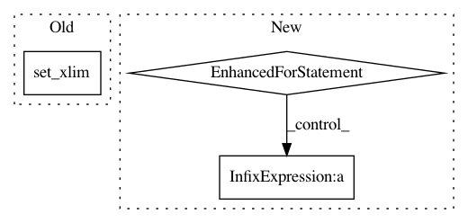

5cc17e87542da0ec1b41d3c159caeb22ac493cd2,GPy/plotting/matplot_dep/visualize.py,mocap_data_show,finalize_axes,#mocap_data_show#,472
Before Change
self.line_handle[0].remove()
def finalize_axes(self):
self.axes.set_xlim(self.x_lim)
self.axes.set_ylim(self.y_lim)
self.axes.set_zlim(self.z_lim)
self.axes.auto_scale_xyz([-1., 1.], [-1., 1.], [-1., 1.])
After Change
centers = np.mean(extents, axis=1)
maxsize = max(abs(sz))
r = maxsize/2
for ctr, dim in zip(centers, "xyz"):
getattr(self.axes, "set_{}lim".format(dim))(ctr - r, ctr + r)
// self.axes.set_aspect("equal")
// self.axes.autoscale(enable=False)
def finalize_axes_modify(self):
self.axes.set_xlim(self.x_lim)
self.axes.set_ylim(self.y_lim)
self.axes.set_zlim(self.z_lim)
In pattern: SUPERPATTERN
Frequency: 3
Non-data size: 3
Instances
Project Name: SheffieldML/GPy
Commit Name: 5cc17e87542da0ec1b41d3c159caeb22ac493cd2
Time: 2015-06-28
Author: z.dai@sheffield.ac.uk
File Name: GPy/plotting/matplot_dep/visualize.py
Class Name: mocap_data_show
Method Name: finalize_axes
Project Name: scikit-image/scikit-image
Commit Name: 9346b030fbb9e1630e92153337911a85be10cc1f
Time: 2021-02-12
Author: stefanv@berkeley.edu
File Name: doc/examples/edges/plot_line_hough_transform.py
Class Name:
Method Name:
Project Name: kymatio/kymatio
Commit Name: 4f1e7f2f936bf5f3e6d1da8d8be843dc3273fe67
Time: 2018-11-21
Author: janden@flatironinstitute.org
File Name: examples/1d/plot_filters.py
Class Name:
Method Name: